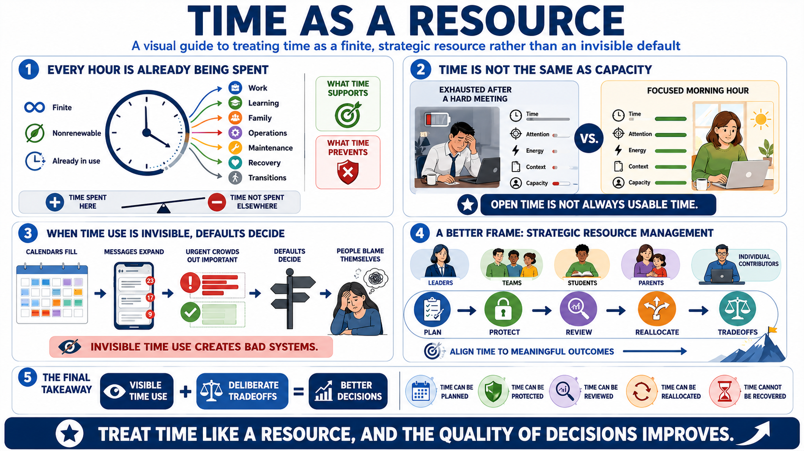

What It Means to Treat Time as a Resource
Connecting to LMS... Progress: in progress

Narration
Treating time as a resource starts with a simple fact: every hour is finite, nonrenewable, and already being spent somewhere. Time does not wait in storage until we feel ready to use it. It moves through work, learning, family life, operations, maintenance, recovery, and the small transitions between them. Resource thinking asks where that time is going, what it is supporting, and what else it prevents.
Time is not the same thing as attention, energy, or calendar availability. A free hour after a difficult meeting may not have the same value as a protected hour at the start of the day. A person can technically have time and still lack the focus, context, or capacity to do demanding work well. That distinction matters because many planning failures begin by treating every open block as equally useful.
This is not a guilt-based way to talk about productivity. The goal is not to shame people for rest, family commitments, interruptions, or imperfect execution. The goal is to make time allocation visible enough to manage it deliberately. When time use is invisible, defaults decide. Calendars fill, messages expand, urgent work crowds out important work, and people blame themselves for a system they never actually designed.
A better frame is strategic resource management. Leaders, teams, students, parents, and individual contributors all make time tradeoffs whether they name them or not. The question is whether those tradeoffs support the outcomes that matter. Time can be planned, protected, reviewed, and reallocated. It cannot be recovered after it has been spent, which is why treating it as a resource changes the quality of decisions.